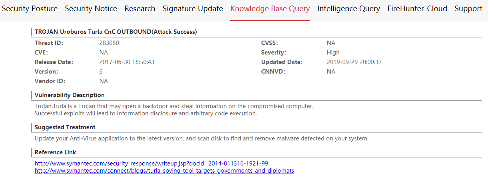

Checking Threat Logs and Modifying Configurations
The device detects traffic that matches a security policy. If an intrusion behavior is detected, the device processes the data flow based on the action specified in the IPS profile and generates a threat log. You need to analyze logs to learn about attacks on the network and modify configurations to achieve the optimal defense and reduce unnecessary logs on the device.
You can obtain basic information such as the traffic address, protocol, as well as the attack signature and response action based on the following log information:
IPS/4/DETECT(l):An intrusion was detected. (SyslogId=2, VSys="public",Policy="policy1", SrcIp=192.168.1.2, DstIp=192.168.0.2, SrcPort=80,
DstPort=53319,SrcZone=untrust, DstZone=trust, User="unknown", Protocol=TCP, Application="HTTP",Profile="default",
SignName="Microsoft Internet Explorer CVE-2014-1815 Use After Free",SignId=263490, EventNum=1, Target=client, Severity=high, Os=windows,
Category=Code-execution, Reference=CVE-2013-1234, Action=Alert, Extend="" , UserGroup="unknown")

The DETECT threat log is used as an example. For details about other threat logs, see IPS logs in the Log Reference.
Some threats also have the corresponding Common Vulnerabilities and Exposures (CVE) number, or Bugtraq ID (BID). You can visit https://www.cve.org/ to query the CVE number, or BID to obtain detailed information about the threats.
No matter whether the default IPS profile or a customized IPS profile is used, you need to continuously monitor logs, analyze the attack types, attack sources, and attack targets on the network, and take proper measures to handle threat events or modify configurations.
- Identify attack logs that are generated in large numbers within a short period of time and take measures to block the attack source in a timely manner.
You can find the exception based on the IP addresses and attack types in the logs. For example, if the source IP address in a large number of threat logs is the same public IP address that is not used for normal services, you can configure a security policy to deny traffic from this IP address. If a large number of logs related to an intranet PC or server are generated, the intranet PC or server may be intruded. In this case, you are advised to disconnect the intranet PC or server from the network and remove viruses on the intranet PC or server.
- Learn more about the attack details and analyze the impact of the attack.
The log information contains the signature ID, protocol, application, and attack type. You can also access Huawei security center (isecurity.huawei.com) to view more information such as handling suggestions.
In Huawei security center, choose . The signature information is displayed as follows, including the handling suggestions for the attack.

Based on the signature information, you can perform the following operations:
- Check whether the attack is reported by mistake based on the attack type and the services running on the attack target. For example, many SQL injection attacks are detected, but no SQL database is running on the attacked server. In this case, the SQL injection attacks are incorrectly reported. Additionally, some normal services used by the enterprise, for example, security scanning software, may be incorrectly reported as attacks. Such attacks do not need to be detected.
Perform security hardening or upgrade based on the handling suggestions. Attacks usually exploit system vulnerabilities, including attacks on the operating system, software, and database. To defend against such attacks, you need to perform system security hardening operations such as patch installation or software upgrade.
Determine whether attacks are high-risk attacks such as Trojan horses and information disclosure. If so, block such attacks immediately.
- If you cannot determine whether blocking some attacks will affect services, continuously monitor these attacks before taking further measures.
- Repeat the preceding steps to continuously monitor threat logs and modify configurations.
By continuously monitoring logs, you can learn about the types of protocols, applications, and attacks to be defended against on the current network. Then you can manually create an IPS profile by referring to Manually Creating an IPS Profile to defend against attacks corresponding to specific signatures.
After the IPS profile is manually created, you need to continuously monitor logs and modify configurations as required.
- For attacks that are reported by mistake, you can take the following measures:
If a large number of attacks on a certain type of operating system or service are incorrectly reported, for example, a large number of attacks on the Linux operating system but no server running the Linux operating system is deployed on the network, check whether the Linux operating system attack signature is configured as a filtering condition in a signature filter in the IPS profile. If so, you can cancel the filtering condition.
If attacks corresponding to a signature are incorrectly reported, specify the signature as an exception signature in the IPS profile and set the action to allow. You can also disable the signature globally.
[Device] profile type ips name profile_ips [Device-profile-ips-profile_profile_ips] exception ips-signature-id id action allow
If an attack on a fixed IP address is incorrectly reported, for example, the device where the security scanning software is installed is detected as an attack source, configure the device not to detect the traffic from the IP address (that is, delete the corresponding IP address from the security policy that references the IPS profile).
- For attacks that exploit system vulnerabilities, enable antivirus software on the host and install patches or upgrade software.
- For high-risk attacks, block them in a timely manner. In most cases, the default action for signatures of high-risk attacks is block. If the response action in a log is alert, configure the signature as an exception signature and set the action to block or blacklist when no services are affected.
- For attacks that you are not clear about the attack sources or whether services will be affected if the attacks are blocked, you can retain the action as alert, monitor the attacks, and handle the attacks after confirming the attack sources.
- If some normal services are affected, check threat logs for the types of affected services. Then modify the IPS profile.
- For attacks that are reported by mistake, you can take the following measures: